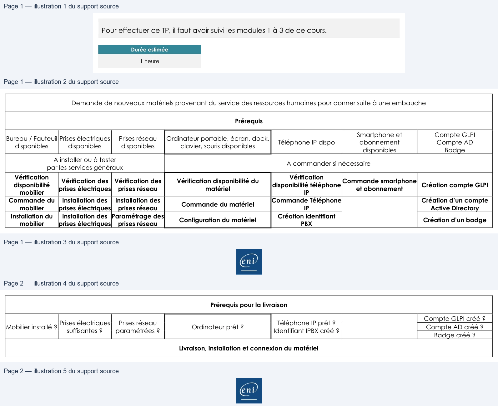

Transcription du document du Drive TSSR. La mise en forme est adaptée au Web ; les compléments IA du portail sont présentés séparément.
Sensibilisation à ITIL
TP du Module 03 - Les Publications centrales : stratégie et conception des services
Pour effectuer ce TP, il faut avoir suivi les modules 1 à 3 de ce cours.
Durée estimée
1 heure
Demande de nouveaux matériels provenant du service des ressources humaines pour donner suite à une embauche
Prérequis
Smartphone et
Compte GLPI
Bureau / Fauteuil
Prises électriques
Prises réseau
Ordinateur portable, écran, dock,
abonnement
Compte AD
disponibles
disponibles
disponibles
clavier, souris disponibles
Téléphone IP dispo
disponibles
Badge
A installer ou à tester
par les services généraux
A commander si nécessaire
Vérification des
Vérification disponibilité du
Commande smartphone
Vérification
disponibilité
Vérification
disponibilité téléphone
Vérification des
prises électriques
prises réseau
matériel
et abonnement
Création compte GLPI
mobilier
IP
Commande du
Installation des
Création d’un compte
mobilier
Installation des
prises électriques
prises réseau
Commande du matériel
Commande Téléphone
IP
Active Directory
Installation du
Paramétrage des
mobilier
Installation des
prises électriques
prises réseau
Configuration du matériel
Création identifiant
PBX
Création d’un badge
Page 1/2
© ENI – Tous droits réservés
es
| Demandedenouveauxmatérielsprovenantduservicedesressourceshumainespourdonnersuiteàuneembauche | ||||||
| Prérequis | ||||||
| Bureau/Fauteuil disponibles | Prisesélectriques disponibles | Prisesréseau disponibles | Ordinateurportable écran dock , , , clavier sourisdisponibles , | TéléphoneIPdispo | Smartphoneet abonnement disponibles | CompteGLPI CompteAD Badge |
| Ainstallerouàtester parlesservicesgénéraux | Acommandersinécessaire | |||||
| Vérification disponibilité mobilier | Vérificationdes prisesélectriques | Vérificationdes prisesréseau | Vérificationdisponibilitédu matériel | Vérification disponibilitétéléphone IP | Commandesmartphone etabonnement | CréationcompteGLPI |
| Commandedu mobilier | Installationdes prisesélectriques | Installationdes prisesréseau | Commandedumatériel | CommandeTéléphone IP | Créationd’uncompte ActiveDirectory | |
| Installationdu mobilier | Installationdes prisesélectriques | Paramétragedes prisesréseau | Configurationdumatériel | Créationidentifiant PBX | Créationd’unbadge |
Sensibilisation à ITIL
Prérequis pour la livraison
Compte GLPI créé ?
Mobilier installé ? Prises électriques
Compte AD créé ?
suffisantes ?
Prises réseau
paramétrées ?
Ordinateur prêt ?
Téléphone IP prêt ?
Identifiant IPBX créé ?
Badge créé ?
Livraison, installation et connexion du matériel
Page 2/2
© ENI – Tous droits réservés
| Prérequispourlalivraison | ||||||
| Mobilierinstallé? | Prisesélectriques suffisantes? | Prisesréseau paramétrées? | Ordinateurprêt? | TéléphoneIPprêt? IdentifiantIPBXcréé? | CompteGLPIcréé? CompteADcréé? Badgecréé? |
